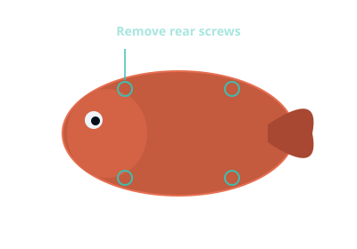
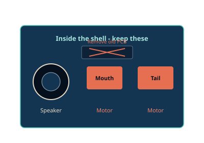
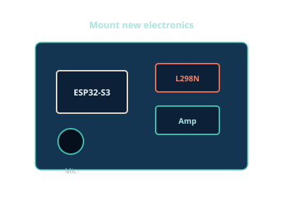

Prep the bench
Order everything on the bill of materials. While parts ship, skim the wiring diagrams so the pin map is familiar.
- Billy Bass (working motors preferred — even if the board is dead)
- ESP32-S3 with PSRAM, INMP441, MAX98357A (screw-terminal version if possible), L298N
- 5 V / 3 A supply, USB-C data cable, Dupont jumpers
- Wago-style lever nuts (or screw terminal blocks) — the no-solder joiners
- Wire strippers, flush cutters, multimeter, Phillips driver (soldering iron optional)
- Chrome or Edge browser for the flash page
- OpenAI API key with access to Whisper + chat + TTS
Time estimate
First build on the bypass path: about 2–3 hours, mostly labeling wires and flashing. A soldering iron is optional insurance, not required.
Open the shell
Flip Billy and remove the rear screws
Lay the plaque face-down on a soft cloth. Remove every screw on the backplate (typically 4–6 Phillips). Some remakes hide screws under rubber feet — peel carefully.
Gently pry the rear cover. Plastic clips along the rim can crack; work a thin tool around the edge instead of yanking the plaque.

Bypass the stock microcontroller
You do not need to desolder motors or gut the plaque. The stock board becomes dead weight (or comes out later for space). All you need are the motor and speaker wire pairs — cut them at the PCB end so the mechanisms stay intact.

Label, snip, isolate
- Photograph the stock wiring before you cut.
- Trace each motor’s two leads back to the stock PCB. Label with tape: M (mouth/head) and T (tail). Label the speaker pair SPK.
- Unplug if there are connectors. Otherwise snip 1–2 cm from the PCB — keep the long side attached to the motor/speaker.
- Strip ~6 mm of insulation. Join to your new harness with lever nuts or screw terminals (no solder).
- Tape or heat-shrink the stub ends still on the stock PCB so nothing shorts. Remove batteries / disconnect the stock power jack so the old MCU stays dark.
Why this works
The stock microcontroller only mattered as a motor/speaker driver. Once those wires are cut, it cannot fight the ESP32. Leave the board screwed in for mechanical support, or unscrew and lift it out later if you need room — still without touching motor solder joints.
Do not discard
Speaker, mouth/head motor, tail motor, mechanical linkages, and the front plaque.

Identify the motors
Classic Billy Bass units usually have two DC motors: one for the mouth (sometimes combined with a head-turn linkage) and one for the tail flop. Some generations add a third for body lean — if you have three, wire the third to a spare L298N channel or a second driver; the stock firmware animates two channels.
| Motor | What it moves | Firmware channel |
|---|---|---|
| Mouth / head | Lips open/close; sometimes head turn | L298N A → GPIO16/17 |
| Tail | Side-to-side flop | L298N B → GPIO4/5 |
Test each motor with a 3–5 V bench supply briefly (correct polarity doesn’t matter yet). Confirm free movement without binding against the plaque.
Mount the new stack
Fit ESP32, driver, amp, and mic
If you printed a backplate, screw the L298N and ESP32 into the standoffs first. Otherwise hot-glue or zip-tie modules to the rear cavity — keep USB accessible.
Place the INMP441 near the mouth opening or a drilled grille so voice isn’t muffled by plastic. Point the mic port outward; keep it away from the speaker to reduce feedback.
Mount the MAX98357A close to the speaker leads. Prefer an amp board with screw terminals for the speaker — shove the stripped SPK wires in and tighten. Route motor wires away from I2S clock lines where you can.

Wire everything (solder-light)
Follow the full pin maps on the wiring page. Use Dupont jumpers between ESP32 / mic / amp / L298N headers. Use lever nuts or the L298N screw terminals for the fish’s motor and speaker leads.
- Common ground — ESP32 GND, amp GND, L298N GND, mic GND (Dupont).
- Mic I2S — GPIO8/9/10 + 3V3. L/R to GND (Dupont).
- Amp I2S — GPIO11/12/13 + 5V (Dupont). Speaker pair into amp screw terminals.
- Motors — L298N IN1–IN4 from ESP32 via Dupont; mouth/tail pairs into OUT screw terminals (or lever-nut to flying leads).
- Power — ESP32 via USB for bring-up; later a dedicated 5 V / motor supply into L298N Vin with shared ground.

When you might still solder
Only if a module lacks pins/terminals, or a wire is too short to strip. Even then, a short pigtail + lever nut beats desoldering a motor from the fish.
Continuity check
Before applying motor voltage, beep-test that motor outs are not shorted to 5 V or GND, and that 3V3 is not connected to 5 V.
Flash the firmware
Configure and program from the browser
Plug the ESP32-S3 into your PC with a data-capable USB-C cable. Open the flash page in Chrome or Edge (Web Serial required).
Enter:
- Wi‑Fi SSID and password (2.4 GHz)
- OpenAI API key
- Optional personality / system prompt (“You are Billy, a sarcastic singing fish…”)
Click Connect, select the serial port, then Flash. The site writes the application image and a small config partition containing your secrets — they never leave your browser except onto the device.

First boot
After reset, watch the serial log on the flash page (or any serial monitor at 115200).
You should see Wi‑Fi connect, then [billy] ready.
If Wi‑Fi fails, re-flash with corrected credentials.
Talk to Billy
Default interaction modes:
| Mode | How | What happens |
|---|---|---|
| Push-to-talk | Hold the button on GPIO14 (or send t over serial) |
Records audio → Whisper STT → GPT → TTS → mouth sync |
| Auto listen | Enabled in config; voice activity detection | Starts a turn when you speak above the energy threshold |
While audio plays, the firmware measures RMS energy on the outbound PCM stream and drives the mouth motor open on peaks, closed on silence. The tail gets occasional flops so Billy doesn’t look frozen mid-sentence.
Close the shell once you’re happy. Strain-relieve the USB or power cable. Hang Billy on the wall and try: “What’s the weather vibe today?”
Troubleshooting
| Symptom | Likely cause | Fix |
|---|---|---|
| ESP resets when mouth moves | Shared supply brownout | Separate motor Vin; thicken ground; 1000 µF across motor supply |
| No serial port in browser | Charge-only cable / drivers | Try another cable; install CP210x/CH340 if using UART bridge |
| Wi‑Fi won’t join | 5 GHz-only network / typo | Use 2.4 GHz SSID; re-flash config |
| Silence from speaker | Amp SD pin / gain / wiring | Confirm DIN/BCLK/LRC; SD pulled high; speaker continuity |
| Mic records nothing | L/R floating or 5 V on VDD | L/R→GND; VDD on 3V3 only; check GPIO8/9/10 |
| Mouth always open | Motor polarity / stuck linkage | Swap OUT1/OUT2; free the mechanism |
| OpenAI 401 errors | Bad API key | Regenerate key; re-flash config partition |